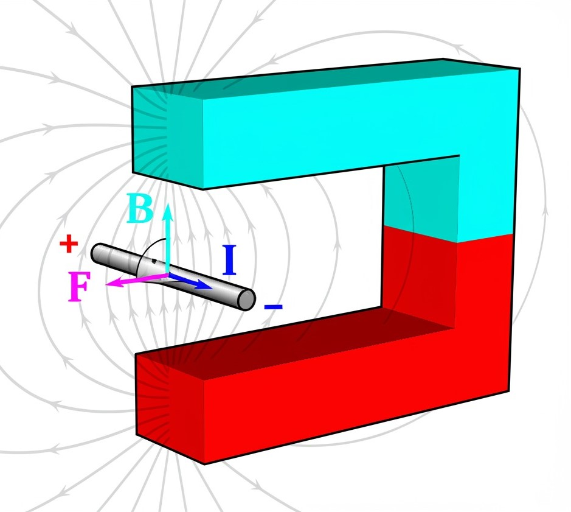
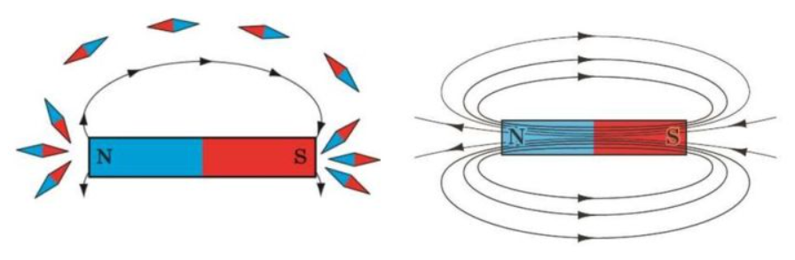
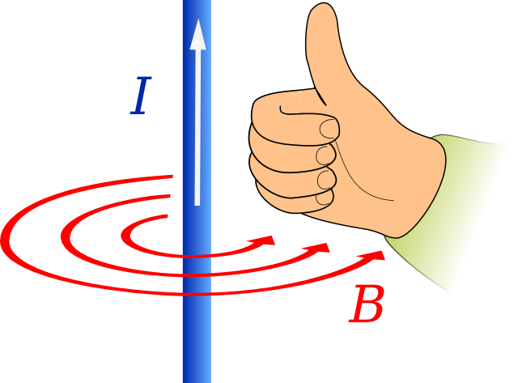
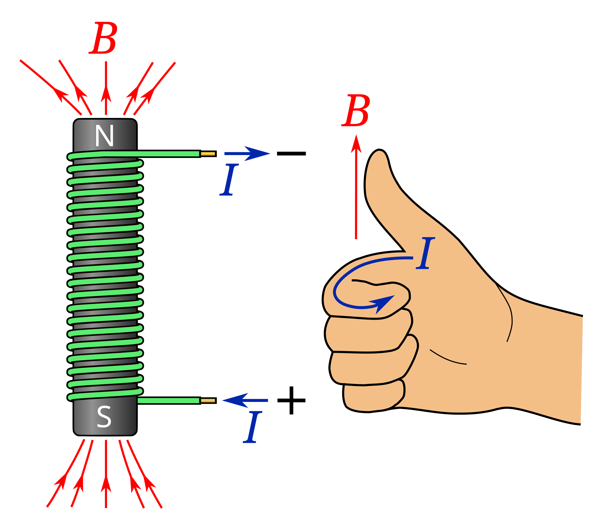

Магнітне поле#
Данський науковець Ганс Крістіан Ерстед (1777–1851) у 1813 році висловив припущення: "Варто перевірити, чи справляє електрика будь-який вплив на магніт". Проте лише через сім років, взимку 1820 року, він виявив явище відхилення магнітної стрілки поблизу провідника, яким протікає електричний струм. Це відкриття стало першим експериментальним доказом взаємозв'язку між електричними та магнітними явищами. Виникають логічні запитання: чому відбувається відхилення стрілки? Чому змінюється її положення при зміні напрямку струму? Розберемо це детальніше.
Генерація магнітного поля#
Як відомо, навколо електрично заряджених об'єктів та частинок формується електричне поле, через яке реалізується електрична взаємодія. Коли заряджені частинки перебувають у русі, навколо них додатково виникає магнітне поле, що забезпечує магнітну взаємодію. Сучасна фізична теорія розглядає ці явища як єдину електромагнітну взаємодію, яка здійснюється через електромагнітне поле з двома проявами - електричним та магнітним полями.
Якщо розмістити паралельно два тонкі гнучкі провідники та пропустити через них електричний струм, можна спостерігати їхнє взаємне притягання або відштовхування, незважаючи на електричну нейтральність провідників. Цей експеримент вперше продемонстрував французький математик і фізик Андре-Марі Ампер (1775–1836) у вересні 1820 року.
Ампер дотримувався теорії далекодії, вважаючи, що взаємодія між провідниками зі струмом відбувається миттєво, без участі навколишнього середовища.
Натомість англійський дослідник Майкл Фарадей (1791–1867) розробив альтернативну теорію близькодії. Згідно з нею, спрямований рух заряджених частинок у провідниках зі струмом створює в оточуючому просторі магнітне поле. Взаємодія провідників реалізується через це магнітне поле, причому відбувається не миттєво, а з певною швидкістю. У сучасній фізиці теорію далекодії вже не використовують, а натомість враховують, що взаємодія поширються із певною скінченною швидкістю.
Магнітне поле — особлива форма матерії, що виникає навколо намагнічених тіл, провідників зі струмом, змінних електричних полів, а також рухомих заряджених тіл і частинок. Магнітне поле проявляється через вплив на інші намагнічені об'єкти, провідники зі струмом, рухомі заряджені тіла та частинки, які знаходяться в цьому полі.
Властивості магнітного поля#
Магнітне поле є матеріальним - воно існує реально, незалежно від наших уявлень.
Магнітне поле є складовою електромагнітного поля.
Магнітне поле створюють:
змінне електричне поле
намагнічені тіла
рухомі заряджені частинки і тіла
провідники зі струмом
Магнітне поле діє з деякою силою:
на заряджені тіла і частинки, що рухаються в цьому полі
на провідники зі струмом
на намагнічені тіла
Магнітне поле чинить орієнтувальну дію:
на магнітну стрілку
на рамку зі струмом
Силова характеристика магнітного поля#
Розглянемо експеримент. Пружний провідник з немагнітного матеріалу підвішується на проводах між полюсами постійного магніту. При проходженні струму через провідник спостерігається його відхилення. Це відхилення спричинене силою, що діє на провідник зі струмом з боку магнітного поля — її називають силою Ампера \(\vec{F_A}\) (рис. 1).

Рис. 1. Провідник зі струмом відхиляється в магнітному полі постійного магніту внаслідок дії сили Ампера. Wikimedia Commons CC BY-SA 4.0.
Експериментальні дослідження з варіюванням параметрів (сили струму, довжини активної частини провідника, кута між провідником і лініями магнітної індукції) дозволяють встановити наступні закономірності:
сила Ампера прямо пропорційна як силі струму \(I\), так і довжині \(l\) активної частини провідника (тієї частини, що перебуває в магнітному полі), тобто пропорційна добутку цих величин: \(F \sim I l\);
сила Ампера досягає максимального значення, коли провідник розташований перпендикулярно до ліній магнітної індукції.
З урахуванням того, що \(F_{A \max} \sim I l\), для конкретної ділянки магнітного поля відношення \(\frac{F_{A \max}}{I l}\) залишається сталим незалежно від сили струму та довжини провідника. Це відношення визначається винятково властивостями самого магнітного поля, тому його обрано як силову характеристику магнітного поля під назвою магнітна індукція.
Магнітна індукція \(\vec{B}\) - векторна фізична величина, що кількісно характеризує силову дію магнітного поля. За модулем дорівнює відношенню максимальної сили, з якою магнітне поле діє на розміщений у ньому прямий провідник зі струмом, до добутку сили струму в провіднику та довжини його активної частини:
Одиниця магнітної індукції в СІ — тесла (на честь американського винахідника і фізика сербського походження Ніколи Тесли (1856–1943)):
1 тесла - це магнітна індукція однорідного магнітного поля, яке діє з максимальною силою 1 ньютон на провідник довжиною 1 метр при силі струму в ньому 1 ампер.
Оскільки магнітна індукція є векторною величиною, для її повного визначення необхідно знати не лише числове значення, а й напрямок. За напрямок вектора магнітної індукції в конкретній точці магнітного поля прийнято напрямок, який вказує північний полюс магнітної стрілки, розміщеної в цій точці (рис. 10.4, а).

Рис. 2. Напрямок ліній магнітної індукції
Напрямок вектора магнітної індукції магнітного поля провідника зі струмом і котушки зі струмом можна визначити за допомогою правила свердлика або правої руки: якщо спрямувати великий палець правої руки вздовж напрямку струму в провіднику, то чотири зігнуті пальці вкажуть на напрямок ліній магнітної індукції магнітного поля струму (рис. 3). Якщо чотири зігнуті пальці правої руки спрямувати за напрямком струму в котушці зі струмом, то відігнутий на 90° великий палець вкаже напрямок ліній магнітної індукції магнітного поля всередині котушки (рис. 4).

Рис. 3. Правило правої руки для визначення напрямку ліній магнітної індукції, створених провідником зі струмом

Рис. 4. Правило правої руки для визначення напрямку ліній магнітної індукції всередині котушки зі струмом. Public Domain. Link (https://commons.wikimedia.org/wiki/File:Coil_right-hand_rule.svg)
{kind=link}
Лінії магнітної індукції#
Людські органи чуття не здатні безпосередньо сприймати магнітні поля. Для їх наочного представлення Майкл Фарадей запропонував використовувати модель ліній магнітної індукції.
Лінії магнітної індукції - умовні напрямлені лінії, у кожній точці яких дотична збігається з напрямком вектора магнітної індукції в цій точці.
При зображенні ліній магнітної індукції їх щільність відображає інтенсивність магнітного поля: більша щільність ліній відповідає більшому значенню модуля магнітної індукції на цій ділянці. Важливо: лінії магнітної індукції завжди утворюють замкнені криві, оскільки магнітне поле є вихровим.
Коли на певній ділянці лінії магнітної індукції паралельні та розташовані на рівних відстанях одна від одної, таке магнітне поле називають однорідним.
Магнітне поле вважається однорідним у певній області простору, якщо в усіх точках цієї області вектори магнітної індукції мають однаковий модуль і напрямок.
У загальному випадку магнітні поля є неоднорідними - вектори магнітної індукції в різних точках поля відрізняються за значенням та напрямком. Через це лінії магнітної індукції зазвичай мають викривлену форму, а їх щільність змінюється.
Магнітне поле соленоїда і штабового магніту
Соленоїд - циліндрична котушка, довжина якої значно перевищує її діаметр. Магнітні поля соленоїда та штабового магніту мають однакову конфігурацію.
Як соленоїд, так і штабовий магніт характеризуються наявністю двох полюсів — північного N і південного S. Магнітне поле має найбільшу інтенсивність саме на полюсах, що відображається найбільшою щільністю ліній магнітної індукції в цих областях.
Лінії магнітної індукції магнітного поля виходять із північного полюса та входять у південний як у соленоїда, так і у штабового магніту.
Внутрішня область соленоїда та магніту характеризується майже однорідним магнітним полем: лінії магнітної індукції паралельні й розташовані на однакових відстанях.
Найпотужніші магніти
З усіх відомих джерел магнітного поля найінтенсивніше магнітне поле у Всесвіті генерують магнетари (магнітні нейтронні зорі; альтернативна назва - магнітар) - до \(1·10^{14} \text{ Тл}\). Для порівняння: магнітна індукція поля Сонця становить лише 5 мТл, а Землі - у 100 разів менше.